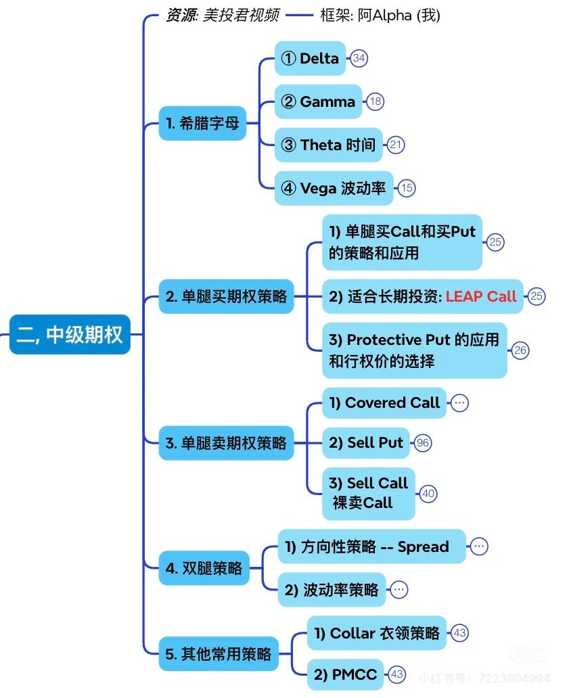
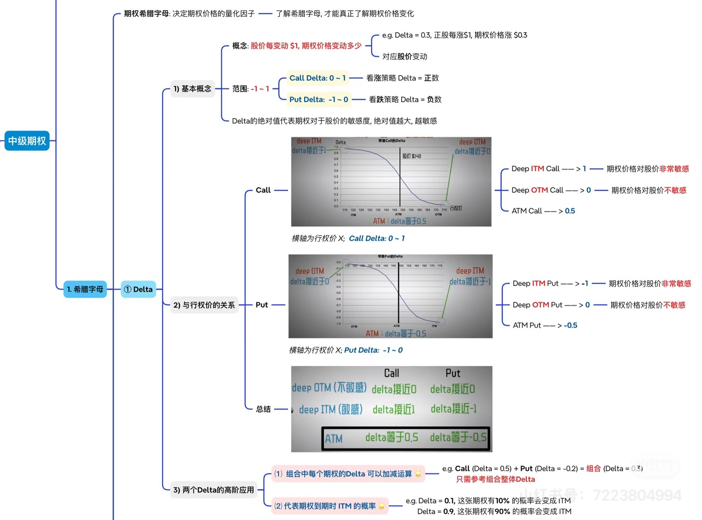
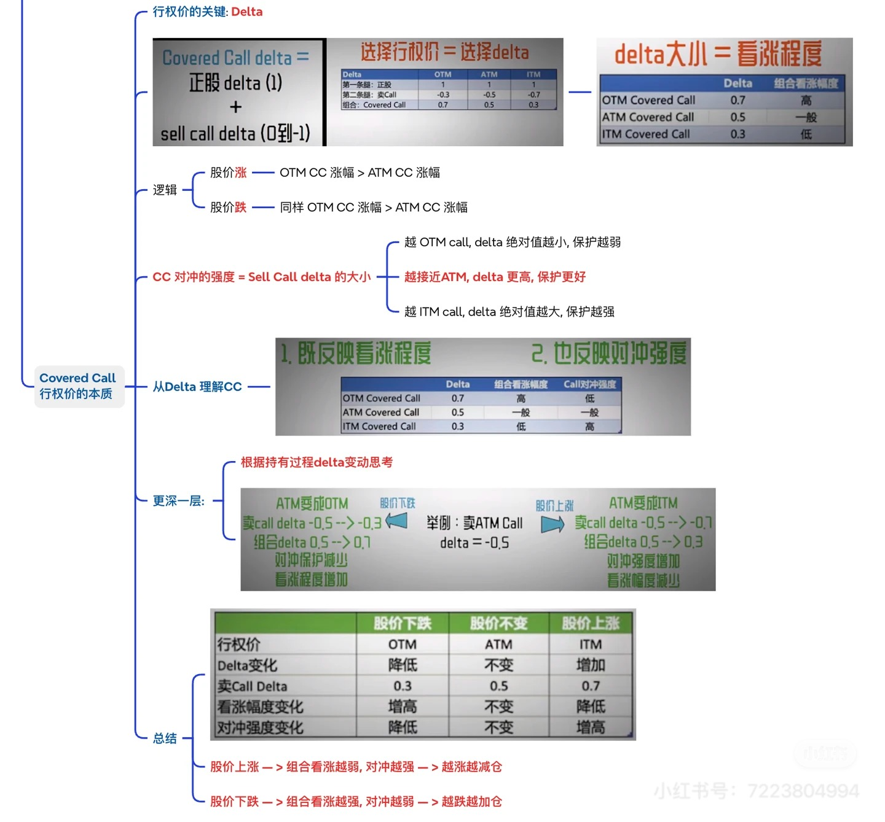

本章任务
理解 Delta 如何同时刻画价格敏感度、位置手感与期权更像股票还是赔率仓的差异。
先把这一章真正要解决的问题钉住，再顺着章节索引进入正文；真正有营养的解释放在正文里，不停留在摘要口号上。
理解 Delta 如何同时刻画价格敏感度、位置手感与期权更像股票还是赔率仓的差异。
先用这一段确认本章任务，再直接看下面的章节索引和正文展开。期权章节不追求“短句总结很多”，而是追求把概念、例子、边界和实战误区讲透。
正文按完整阅读链组织：先把主问题讲清，再用分节例子、图示和边界把理解压实。
本章主要基于以下图片材料整理并扩写：

中级期权总纲，明确把 Delta 放在希腊字母部分的第一位； 
Delta 的核心图，包含取值范围、与行权价关系、以及“Delta 近似到期实值概率”的直觉； 
Covered Call 的 Delta 延伸应用，可作为本章最后的实战延展。 如果你只记一句话，那就是：
Delta 先是“期权对股价变动有多敏感”的量尺，进一步才是“这张期权到期时有多大概率落在实值区间”的近似读法。
很多新手学期权时，前面几章都能听懂：
- 什么是 Call / Put；
- ITM / ATM / OTM 怎么分；
- 时间价值会衰减；
- 收益图大概长什么样。
但一旦打开真实期权链，就会突然遇到一个问题：
同样都是 Call，为什么有的涨起来像股票，有的几乎不怎么动？
这时候，Delta 就正式登场了。
它不是一个“高级交易员专属名词”，而是你从“只会看方向”走向“开始理解期权行为”的第一把钥匙。
这一章第一次读，不用急着把 Delta 当成一个很高级的希腊字母。
你先抓两件事：
只要这两句先站稳，你后面再看 ITM / ATM / OTM、LEAP、PMCC，就会顺很多。
第二遍再去补：
股票的世界相对直接：
但期权不是这样。
你买了一张期权之后，它和股价之间并不是 1 比 1 的机械关系。
有的期权：
所以在期权里，除了问“方向对不对”，你还必须问第二个问题：
这张期权，对股价到底敏不敏感？
而 Delta，就是这个敏感度的第一把尺子。
根据主流券商教育资料对 Greeks 的常见定义，Delta 可以先这样理解：
在其他条件暂时不变的前提下，标的股价每变动 1 美元，期权价格理论上会变动多少。
这里有三个词要特别注意：
为什么我要强调这三个词？
因为 Delta 不是承诺书，它不是说：
它更像一个瞬时刻度。
更准确地说，它告诉你的是：
这就像你开车看时速表一样：
Delta 也是同样的道理。
假设现在有一张 Call：
那它的直觉含义就是：
如果是一张 Put：
那它的直觉是：
所以 Delta 不只是“大小”，还有方向。
Call 是看涨权。
所以如果股价上涨，Call 价格通常也会受益。
因此，Call 的 Delta 一般是正数，常见区间是：
你可以这样理解：
比如：
Put 是看跌权。
所以当股价上涨时，Put 往往会受损； 当股价下跌时，Put 往往会受益。
因此，Put 的 Delta 一般是负数，常见区间是：
你可以这样读：
比如：
所以无论 Call 还是 Put，你都别只盯着绝对值，还要先看正负号。
正负号不是数学装饰，而是在告诉你：
如果一张 Call 已经很深实值，那么它为什么 Delta 会接近 1？
因为市场会觉得：
这时它就越来越像股票本身。
反过来，如果一张 Call 很虚值：
这就是为什么：
Put 也是一样的逻辑，只是方向相反。
如果你只背 Delta 数字，很快会忘。
但如果你把它和前面学过的实值 / 平值 / 虚值连起来，它就会突然变得非常顺。
所以你以后看期权链，不要只是看：
请把 Delta 也一起看进去。
因为 Delta 其实是在告诉你：
这一档期权，究竟更像“彩票”，还是更像“正股替身”。
很多教育资料会提到一个非常常见的读法：
某张期权的 Delta，也可以被粗略拿来理解成它到期落入实值的概率。
比如：
这为什么有用？
因为它给了你一个非常直观的概率语言。
你不再只是看到一堆行权价，而是会开始想：
这在选 strike 的时候尤其有帮助。
这里一定要防止一个非常典型的新手误会：
Delta 不是神谕。
它不是说：
你要记住三件事：
股价一动、时间一走、波动率一变，Delta 自己也会变。
期权最后落入实值，不代表你一定赚得好。
因为你买的时候付出的权利金，可能已经很贵。
它更像市场此刻对未来分布的一个压缩表达，而不是最终真相。
所以更稳的表述应该是：
Delta 可以作为“到期实值概率”的粗略读法，用来辅助选仓位、选行权价，但绝不能代替完整的盈亏分析。
你在后面的 PMCC 章节里，会再次遇到这个思想。
为什么 PMCC 的 long leg 往往要选：
因为你既然想让它代替正股，那么你最在乎的就是：
而这背后最直接的衡量尺子，就是 Delta。
如果一张 LEAP Call 的 Delta 只有 0.30：
但如果 Delta 在 0.85 附近：
所以 Delta 的第一个实战用途，不是炫技，而是帮你判断：
你买的到底是“方向表达工具”，还是“近似持股工具”。
假设某只股票现价 100。
你有两种看多方式：
这两个都叫“买 Call”，但实际体验完全不是同一种东西。
所以以后别再用一句“我准备买个 Call”来概括你的交易。
更成熟的表达应该是：
Delta 正是在帮你回答这些问题。
很多人第一次学 Delta，以为：
这是错的。
Delta 会变，而且经常会变得很快。
比如一张 Call：
如果继续走进实值区：
反过来，原来很有希望的一张 Call：
所以你要明白：
Delta 不是身份证号码，而是一个会随着位置变化的动态指标。
而“Delta 变化得有多快”，下一章我们就会交给 Gamma 来解释。
时间越少，市场对“到底会不会进实值”这件事就越敏感。
于是临近到期时，很多期权的 Delta 会变得更极端：
这就是为什么很多短期期权：
你会发现它有时不是慢慢动，而像突然“活过来”或者“迅速死掉”。
所以只会背 Delta 范围还不够，你还要知道：
很多人选行权价，只看哪个便宜。
这很危险。
因为便宜，往往意味着：
所以更稳妥的思路是：
关键不是哪种更高级，而是：
你得先知道自己在买什么。
这一点你先不用掌握到极致，但非常值得提前埋下一个钉子。
如果你持有 100 股正股，再卖一张 Call，组合的整体涨跌敏感度会下降。
卖出的 Call：
卖得越 OTM：
所以 Covered Call 的 strike 选择，本质上也是 Delta 选择。
这部分在后面的策略章节里会展开，但你现在先记住：
Delta 不只用来挑买方仓位，也能帮助你读懂卖方和组合策略到底在做什么。
不是。
Delta 高，只代表它更像正股。
但这通常也意味着：
所以 Delta 高不是“更高级”，只是更适合某些任务。
不是。
它最多只能粗略辅助你读市场对到期实值的定价倾向。
真正的盈亏还要看：
不一定。
便宜常常是因为：
它可能划算，也可能只是“看起来便宜，实际上要求更苛刻”。
这更不对。
你以后看到一张期权链，别把 Delta 当静态标签，而要把它看成：
真正成熟的读法，不是记住一个数字，而是知道这个数字会往哪里跑。
如果这五句话你都能用自己的话讲出来，你已经不是“只知道买 Call / 买 Put 的新手”了。
你开始真正进入期权定价和持仓行为的世界了。
Delta 不是让你显得专业的术语，而是让你第一次真正看懂：同样都是期权，为什么它们对股价的反应会完全不一样。
Delta 告诉你的是：这张期权现在对股价有多敏感。
下一章 Gamma 要补上的，是另一层更动态的问题：